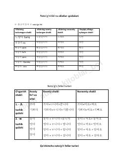

NFKoreys tilidagi noto'g'ri fe'l va sifatlarning tuslanish qoidalari.
Ushbu qo'llanmada koreys tilidagi noto'g'ri fe'l va sifatlarning tuslanish qoidalari misollar bilan tushuntirilgan. Unda ㅎ, 으, ㄹ, ㅂ, ㅅ, ㄷ bilan tugaydigan so'zlarning o'zgarish tartiblari keltirilgan. Material til o'rganuvchilar uchun qulay va tushunarli tarzda tuzilgan.